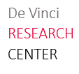

Education
-

2019 - 2020
École Polytechnique - MSc Applied Mathematics, Data Science
- Convex Analysis
- Optimization for Data science
- Reinforcement learning
- Deep Learning
- Theory of Machine Learning
- Machine Learning for Business Case
- Computer Vision
- Bayesian Learning for partially Observed Systems
- Advanced Learning for Text and Graph Data (NLP)
- Natural Language Processing
- Nuages de Points et Modélisation 3D (Master MVA)
2015 - 2020
ESILV (Engineering school), Paris - La Défense
Major: Computer Science, Big Data and connected objects
ESILV is a generalist and digital engineering school. Located in the Pole Universitaire Leonard de Vinci.
- Machine Learning
- Advanced Probability
- Calculus
- Algebra
- Signal Processing
- Advanced Data Structures and Algorithms
- Mechanics
- Thermodynamics
- NoSQL
- ChatBot and Recommendation Systems
- Web Data mining & Semantics
- Cloud & Virtualization techniques

2012 - 2015
Notre Dame de l'Espérance High School (Burkina Faso, Ouagadougou)
Middle School Diploma, with first class honours, 7th in the national ranking. (Official Note)
Scientific Baccalaureat, with first class honours
Experience
-
April - October 2020
Computer Vision R&D Engineer - Dassault Systems, Vélizy-Villacoublay
I am currently working as an intern within the Data Science Research Team of Dassault Systems. One of the biggest challenges in AI and Computer Vision is the ability of the models to quickly understand and identify the characteristics and attributes of unseen objects like humans.
It is in this context that my mission is to create a system able to identify and predict the motion parts and motion attributes of a 3D object in pointclouds.
➢ Bibliographic Review.
➢ Innovative proposals from the state of the art.
➢ Implementation of the solution.
➢ Live Demo of the system.
✹ Prerequisites : Optimisation for Data Science, Stochastic Processes, Machine Learning, Deep Neural Networks.
✹ Technologies : Python, C++, Deep Learning Frameworks (Pytorch, Tensorflow, Keras)
-

2018 - 2020
Research Assistant - Devinci Research Center (DVRC), Paris La Défense
Immersed in the research team of the Pole Leonard de Vinci, I contributed through my work to the reflection on the theme of automatic summarization. I have mainly worked on the generation of abstract summaries from deep neural models. This work led initially to a publication at the EGC 2020 conference in Belgium, on the generation of summaries of sports commentary feeds.
✹ Main avenues : Attention-based deep models (Transformers, Pointer Generator, etc) Reinforcement Learning, GAN (Generative Adversarial Networks). ✹ Frameworks : Python, Deep Learning Frameworks (Pytorch, Tensorflow, Keras).
Article: Génération de résumés abstractifs de commentaires sportifs, P.13 -
April - August 2019
Data Scientist - Société Générale Corporate & Investment Banking (SGCIB), Paris La Défense
Market data is used by billions in sensitive processes such as stock market quotations, risk management, etc. It often comes from external providers such as Bloomberg. However, 90% of the data purchased by SG is not used, there is redundancy in the purchase, difficulties in verifying the adequacy of the data to the use case before purchase.
In this context, my mission was to create an ergonomic tool, allowing to evaluate the quality of a financial data from a battery of statistical tests and statistical learning, but also to verify their adequacy to their use case.
➢ Drawing up specifications.
➢ Collecting and setting up a data stream.
➢ Statistical studies of the data.
➢ Identification of the tests to be carried out, and selection of the financial mathematical models that the data should follow (no arbitrage for example)..
➢ Implementation of a product user interface.
✹ Technologies used : Python, Git, SQL. ✹ Keywords: Statistics, Probability, Machine Learning, Market Finance, Financial Mathematics
-
July 2018
Assistant Portfolio Manager - Advenis IM, Paris
As part of a team of traders at Advenis IM, I mainly learned how to conduct technical and fundamental financial analysis of listed companies. I had the opportunity to apply my knowledge to concrete cases from company studies such as Altran, Avast Antivirus, etc., which studies were used to decide whether Advenis IM should invest in these companies. Such studies involved:
➢ An in-depth study of the activity of the company concerned.
➢ An analysis of the company's accounts.
➢ An analysis of the share price history.
➢ An in-depth study of the business sector in the economic context of the time.
-
June - September 2017
Software Engineer Intern - HighCo Box, Paris
HighCo Box, is one of the European leaders in the issue and distribution of coupon vouchers. This company works with actors of mass distribution (such as Auchan, Monoprix, ...), brands, in order to issue coupons on the internet.
My missions involved...
➢ The development of additional modules and plugins to automate certain tasks for the collaborators
➢ Participation in the migration of the ".NET" Framework of the main application
➢ The implementation of a new annex automatic application, for the communication and file exchange between partners and HighCo Box (updating of coupons to be published on the internet.)
✹ Technologies used: C#, Framework .Net, Ruby on Rails
Portfolio
GuideCam
Prototyping of a vision aid tool
In this project, my comrades Thibaut Tucoulou, Benoit Feurgard, Paul Thibonnier and myself wanted to develop a computer vision prototype, capable of detecting everyday objects in a room, guiding an individual vocally towards the objects he wants to reach.
1st prize in the Défi H competition, we succeeded in convincing people of the importance and usefulness of such a system.
Deep Summarization
Generation of abstract summaries of sports commentaries
Proposal of a deep network architecture for the generation of sports commentary stream summaries. Publication: EGC 2020 TextMine.
Blog
I have always enjoyed discussing Machine Learning, Deep Learning, Mathematics with some friends, explaining to one another the brand new architectures, the improvements, trying to understand in depth what we learn etc. I then decided to launch my own blog on which I will be talking about papers that I really enjoyed reading, but also breaking through ML theory in an intuitive and enjoying way.
Distil-Summarization
Generation of automatic text summaries with reduced size deep networks.
In recent years, we have seen an influx of a large number of high-performance neural models in NLP, but with astronomical dimensions. In this project that I started in April 2020, I study the latest state of the art models in the field of automatic summarization; I then try to build smaller models with the objective of minimizing performance loss. The first results are quite conclusive.
Entropy SGD
Implementation of an optimization method for deep networks
"ENTROPY-SGD: BIASING GRADIENT DESCENT INTO WIDE VALLEYS" is a paper published in 2017 in which the authors try to explain generalization in deep learning under certain assumptions. It is a paper that I liked very much, so I decided to write a blog article on it and to implement an optimization method according to the algorithm they propose.
Pointeur Générateur
Deep Abstractive Summarization
Re-implementation of a neural network architecture for automatic summarization.
Pointer-Transformer
Implementation of a neural architecture for abstract generation.
My mission in this project is to implement a neural architecture combining the "Pointer-Generator" and "Transformer" models for the automatic generation of abstract summaries.
3D Rendering
How to apply a texture, a color, an exposure to light, to 3D models
During my courses on 3D Vision, I had the opportunity to address the subject of 3D rendering, as well as a study on the equation of light. I was thus able to implement mathematical models to simulate the exposure to light of certain objects, their brightness, color, texture etc.
Skills